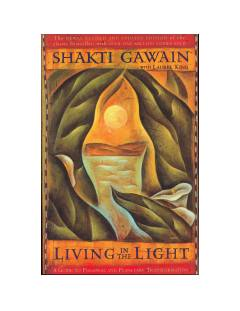

LIShaxsiy va global o'zgarishlar hamda ichki uyg'unlikka erishish uchun amaliy qo'llanma.
Ushbu kitob shaxsiy va sayyoraviy o'zgarishlarga erishish uchun qo'llanma bo'lib, o'quvchilarga o'zining ichki donoligi bilan bog'lanish va intuitiv tarzda yashashni o'rgatadi. Shakti Gawain va Laurel King hamkorligida yozilgan ushbu asar insonning o'zini o'zi anglashi va hayotini ijobiy tomonga o'zgartirishi uchun amaliy maslahatlar beradi. Kitob ma'naviy uyg'onish va ruhiy kamolotga intilayotgan barcha kitobxonlar uchun mo'ljallangan.